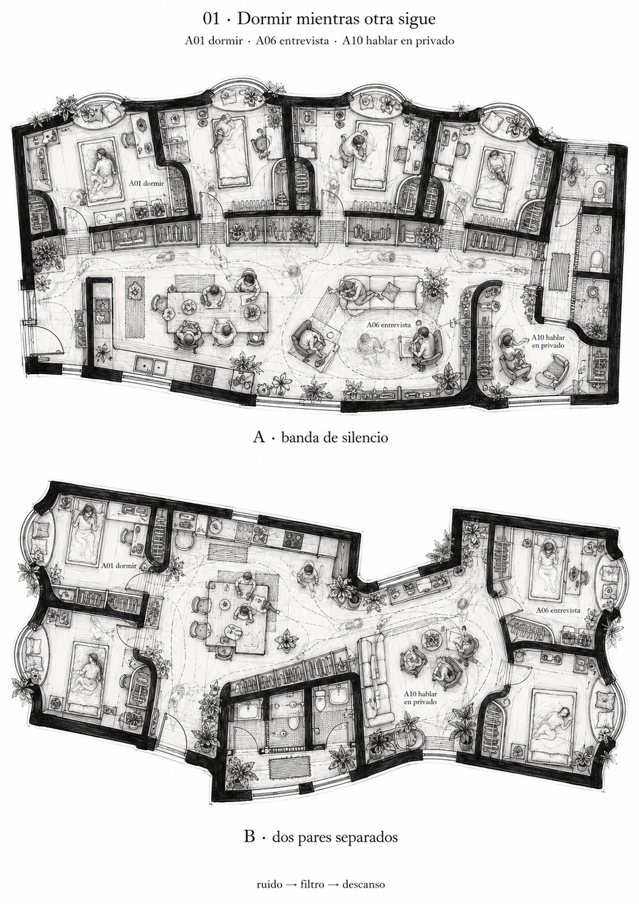
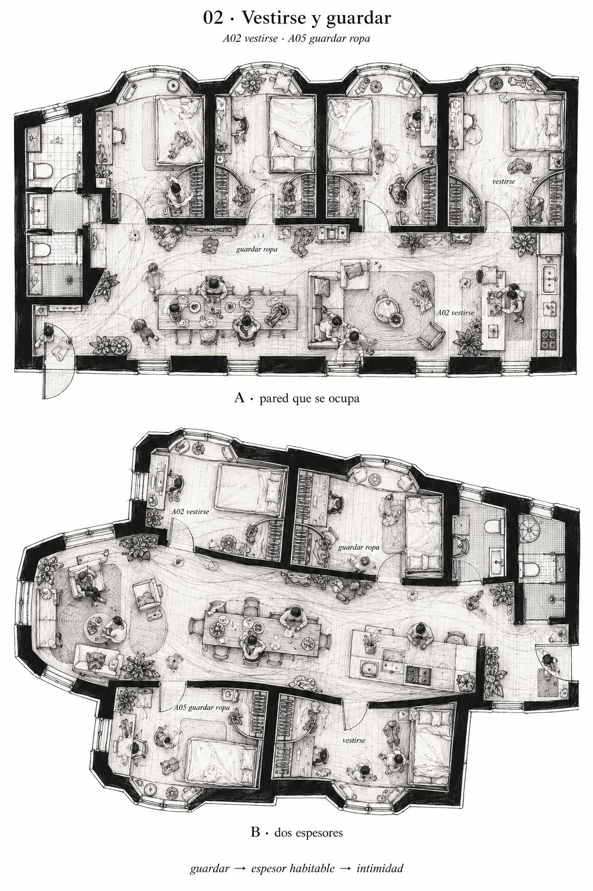
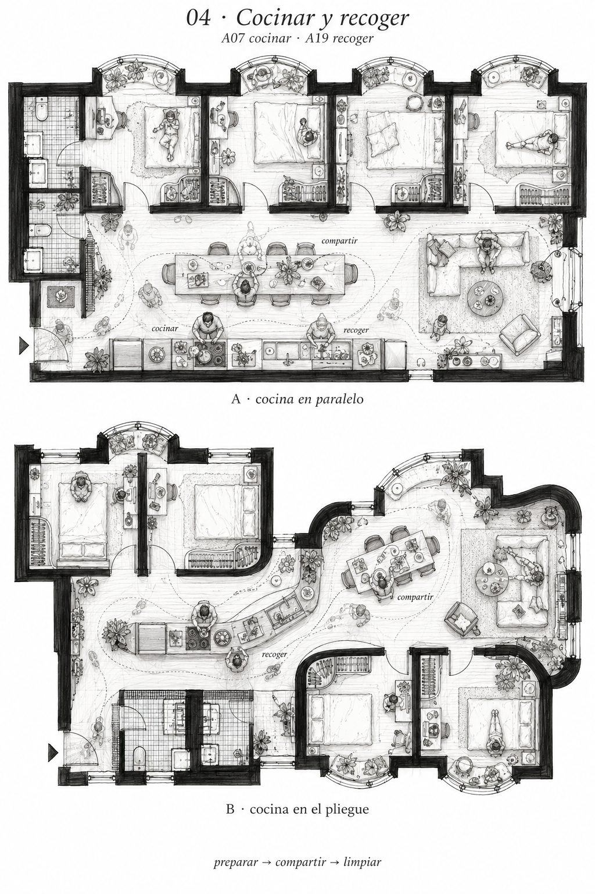
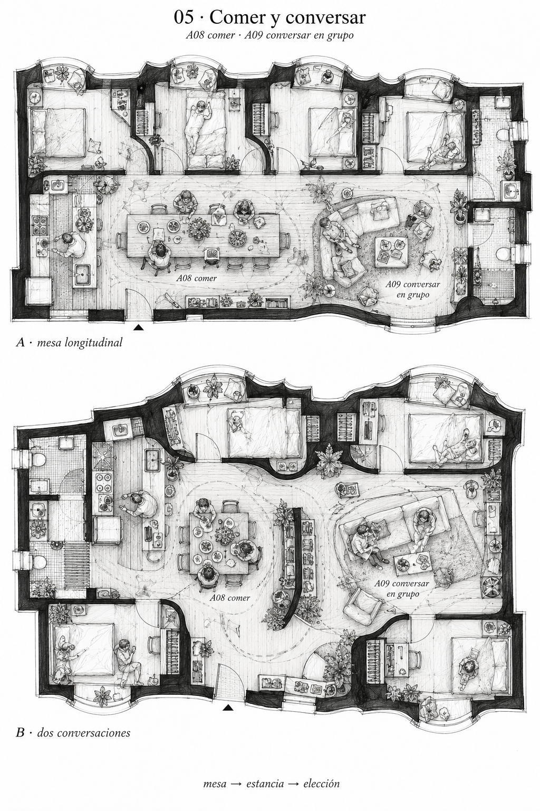
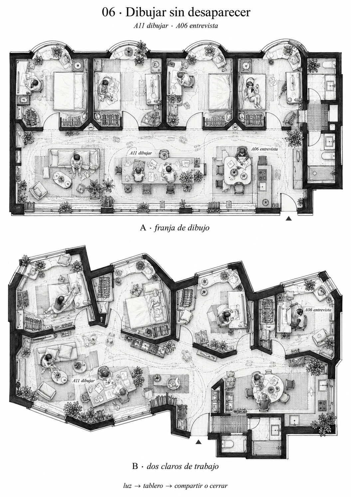
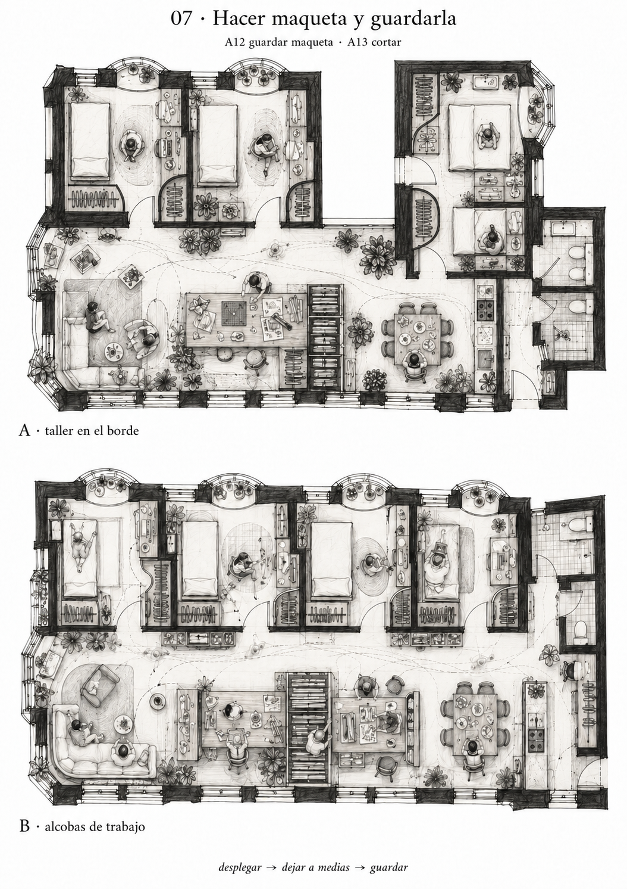
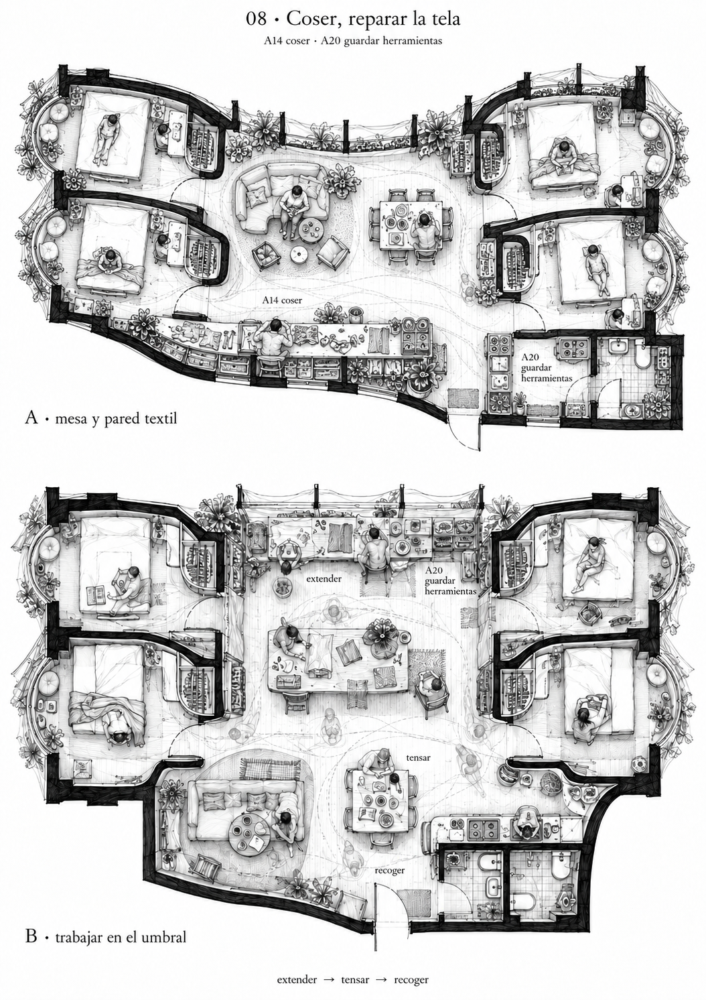
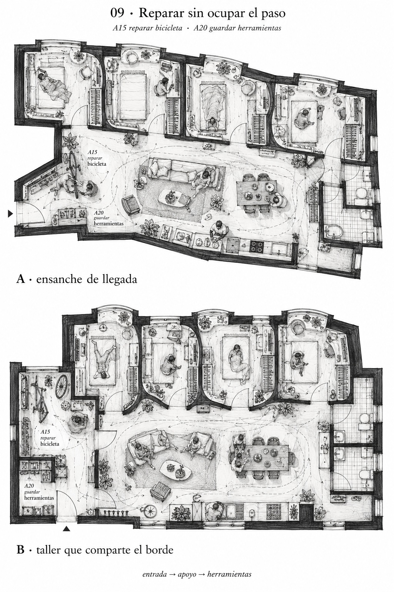
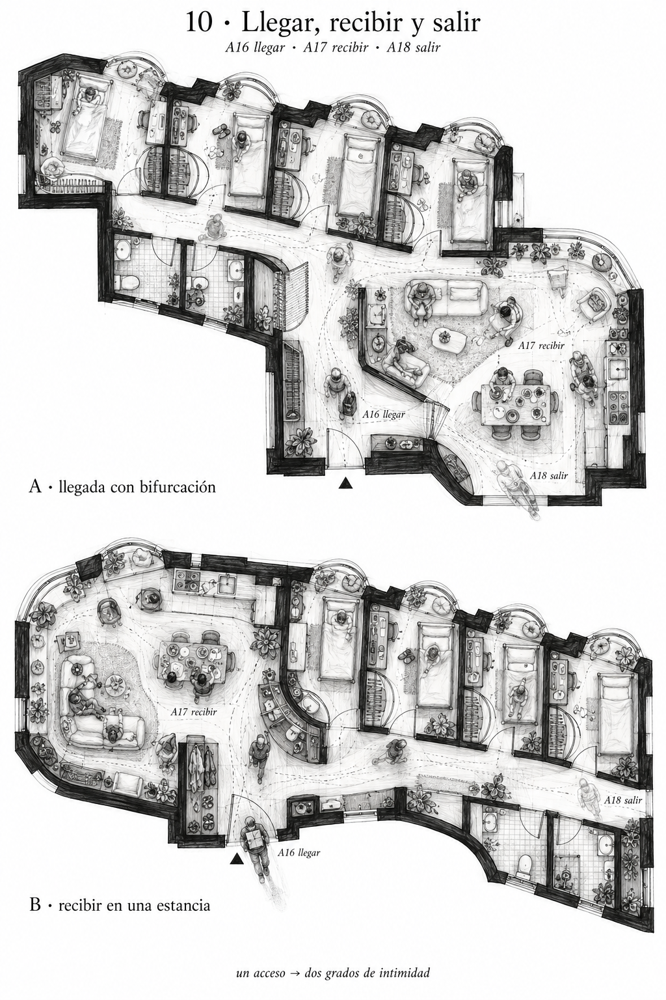

Acciones que organizan la vivienda
Veinte acciones del programa anterior, agrupadas en diez situaciones. Dos respuestas espaciales por situación: veinte plantas nuevas de ensayo. No son giros de las cuarenta anteriores ni una explicación retrospectiva de sus formas.
Los dibujos muestran hipótesis de uso. No son planos medidos y todavía requieren revisar dimensiones, puertas, ventilación, programa y relación con la parcela. Algunas estrategias de banda se repiten deliberadamente entre acciones y deberán compararse; la serie no equivale a veinte soluciones independientes aprobadas.
Blanco y negro, trazos superpuestos, cuerpos y ocupaciones en el tiempo. Ibarra Real Nova local en este índice; las letras de las imágenes son una interpretación raster generada.
01 · Dormir mientras otra sigue
A01 dormir · A06 entrevista · A10 hablar en privado
ruido → filtro → descanso
A · banda de silencio / B · dos pares separados

02 · Vestirse y guardar
A02 vestirse · A05 guardar ropa
guardar → espesor habitable → intimidad
A · pared que se ocupa / B · dos espesores

04 · Cocinar y recoger
A07 cocinar · A19 recoger
preparar → compartir → limpiar
A · cocina en paralelo / B · cocina en el pliegue

05 · Comer y conversar
A08 comer · A09 conversar en grupo
mesa → estancia → elección
A · mesa longitudinal / B · dos conversaciones

06 · Dibujar sin desaparecer
A11 dibujar · A06 entrevista
luz → tablero → compartir o cerrar
A · franja de dibujo / B · dos claros de trabajo

07 · Hacer maqueta y guardarla
A12 guardar maqueta · A13 cortar
desplegar → dejar a medias → guardar
A · taller en el borde / B · alcobas de trabajo

08 · Coser, reparar la tela
A14 coser · A20 guardar herramientas
extender → tensar → recoger
A · mesa y pared textil / B · trabajar en el umbral

09 · Reparar sin ocupar el paso
A15 reparar bicicleta · A20 guardar herramientas
entrada → apoyo → herramientas
A · ensanche de llegada / B · taller que comparte el borde

10 · Llegar, recibir y salir
A16 llegar · A17 recibir · A18 salir
un acceso → dos grados de intimidad
A · llegada con bifurcación / B · recibir en una estancia
